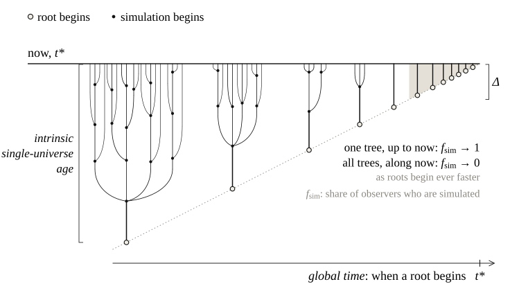

The Simulation Argument and Infinitely Many Universes
Abstract. Nick Bostrom's simulation argument says that, unless civilisations like ours die out or lose interest, most minds like ours are simulated, so we are probably simulated too. That conclusion rests on counting minds. But if there are infinitely many universes, as some cosmological models suggest, the count depends on how one lines the universes up. Grant a global clock that lines them up, and let new universes keep appearing, as they do in eternal inflation: counting everyone who exists at one moment then finds almost no one simulated. Without such a clock, there is no fact about the count at all. Either way, the argument does not tell us that we are simulated.
Could the world we live in be a computer simulation? The question sounds like science fiction, but it has a precise philosophical form. In “Are You Living in a Computer Simulation?”, Nick Bostrom argues that at least one of the following three propositions is true (Bostrom 2003):
The argument rests on a count. Let \(\mathcal{O}\) be the set of observers with experiences like ours and \(\mathcal{O}_{\text{sim}} \subseteq \mathcal{O}\) those among them who are simulated. Everything turns on the simulated fraction \(f_{\text{sim}}\), the share of these observers who are simulated:
\[ f_{\text{sim}} \;=\; \frac{|\mathcal{O}_{\text{sim}}|}{|\mathcal{O}|}. \]A single posthuman civilisation could run vast numbers of ancestor simulations, each containing as many people as a civilisation's entire history. So unless (1) or (2) holds, \(f_{\text{sim}}\) is close to one. (Bostrom writes this as \(f_P \bar N / (f_P \bar N + 1)\), with \(f_P\) the fraction of civilisations that become posthuman and \(\bar N\) the average number of simulations each runs.)
A second premise turns this count into a belief about oneself. If a fraction \(f_{\text{sim}}\) of observers like you are simulated, and nothing in your experience tells you which kind of observer you are, you should be exactly that confident that you are one of the simulated ones, just as, drawing a ticket from a hat that holds 99 red tickets and one white one, you should be 99% sure that yours is red. Bostrom calls this the bland indifference principle, the indifference principle for short: with no evidence that sets you apart, you should be indifferent between being any one of the observers like you. Writing \(\mathrm{Cr}\) for credence, one's degree of belief expressed as a probability, it says:
\[ \mathrm{Cr}(\text{I am simulated}) \;=\; f_{\text{sim}}. \]Together, the count and the principle give proposition 3 its familiar form: we are probably simulated.
All of this assumes that \(f_{\text{sim}}\) is a well-defined number. In a finite world it is: one counts and divides. This note asks what happens when there are infinitely many observers. It argues that \(f_{\text{sim}}\) is then fixed by how one chooses to count rather than by the world, and that reasonable choices give opposite answers.
Call a universe that is not simulated a root. Now suppose there are infinitely many roots, which is less exotic than it sounds. Inflation is the leading account of the very early universe, and in many of its versions it is eternal: it never ends everywhere at once, and keeps producing new pocket universes that are causally disconnected from one another (Vilenkin 1983; Linde 1986; Guth 2007). Each root that lasts long enough runs simulations, and some of those run simulations of their own, so every root carries a tree of simulations.
The observers in roots and the simulated observers then both form countably infinite sets. They have the same cardinality, \(\aleph_0\): the two can be paired off one to one, with nothing left over. The ratio above becomes \(\aleph_0/\aleph_0\), which has no value. Nor does it follow that the two groups are equally common. Cardinality simply cannot compare them, so the comparison has to come from somewhere else.
The standard tool for comparing infinite sets is natural density. List the elements one at a time, look at the first \(n\) entries of the list, compute the proportion that belongs to the set of interest, and see where that proportion settles as \(n\) grows. For a set \(A\) and a list \(x_1, x_2, x_3, \dots\),
\[ d(A) \;=\; \lim_{n\to\infty} \frac{\#\{\, i \le n : x_i \in A \,\}}{n}. \]In the usual order of the natural numbers, about half of the first \(n\) entries are even, so the even numbers have density \(1/2\):
1 2 3 4 5 6 7 8 9 10 11 12 … even: \(1/2\)
Now list the same numbers differently: two odd numbers, then the next even one.
1 3 2 5 7 4 9 11 6 13 15 8 … even: \(1/3\)
Nothing has been added or removed; every number still appears exactly once. But now every third entry is even, and the density of the even numbers is \(1/3\). With three odd numbers before each even one it is \(1/4\); by making the even numbers ever rarer in the list it can be pushed to \(0\), and by doing the opposite towards \(1\). So the question “what fraction of the natural numbers is even?” has no answer until a list is fixed. The usual order only feels like the obvious one.
The simulated fraction works the same way. With infinitely many observers, \(f_{\text{sim}}\) becomes the natural density of simulated observers in some list of all observers (or, more generally, a measure over them). Change the list and the value changes; as long as both groups are infinite, any value in \([0,1]\) can be reached.
Ordering observers across disconnected universes needs something that spans all of them. The most natural candidate is a global time: one clock shared by every universe, against which one can say which universes exist “now”. Either there is such a global time, or there is not. The argument takes each case in turn, and in neither does proposition 3 follow.
Assume, for now, that a global time exists. Each universe also keeps its own clock, its intrinsic time, which measures its age. Against a global time, every root begins at some moment and has a definite age at every later one. Figure 1 draws exactly this picture.
Now suppose, as in eternal inflation, that new roots keep appearing, at a rate that grows exponentially: at any moment of global time most roots are young (Guth 2007). Young roots have not had time to run simulations.

The natural way to use a global time is to count everyone who exists at one of its moments, \(t^*\). Let roots appear at a rate proportional to \(e^{\gamma t}\), and let a root need age \(\Delta\) before it runs any simulations. At \(t^*\), the fraction of roots that are at least \(\Delta\) old is
\[ \frac{\int_{-\infty}^{\,t^*-\Delta} e^{\gamma t}\,dt}{\int_{-\infty}^{\,t^*} e^{\gamma t}\,dt} \;=\; e^{-\gamma\Delta}. \]Only those old roots contain simulations. Give every root one unit of unsimulated observers, and every old root, in addition, \(N\) units of simulated ones. Then the simulated fraction at \(t^*\) is
\[ f_{\text{sim}} \;\approx\; \frac{N e^{-\gamma\Delta}}{N e^{-\gamma\Delta} + 1}, \]which goes to zero once \(\gamma\Delta\) is much larger than \(\ln N\): the count mostly finds newborn universes. In eternal inflation \(\gamma\) is enormous compared with the time it takes a civilisation to develop, so this is the expected case, not a contrived one.
Bostrom's own proposal for the infinite case counts differently: pick a point at the base level and count observers within a sphere of growing radius (Bostrom 2025, question 7). Everything inside the sphere belongs to one root and its simulations; in effect, it counts one tree up to now, and finds \(f_{\text{sim}} \to 1\).
So even granting the most natural ordering there is, Bostrom's conclusion does not follow. The count that actually uses the global time finds almost no one simulated. At best, from Bostrom's side, two simple ways of counting, neither built to give a particular answer, disagree completely, and nothing in the physics says which is correct.
Drop the assumption, and things get worse for the simulation argument, not better.
A defender of Bostrom might reply that, even so, only contrived orderings give a low value, and that the simple ones all give a value near one. Dorr and Arntzenius defend this kind of reply for infinite worlds in general: among all orderings, prefer the simple ones, such as those given by a natural metric (Dorr & Arntzenius 2017). But case one has already shown that simple orderings need not agree, and the natural metric of one universe says nothing about how to line up the others.
Case two is also not merely hypothetical. In cosmology, the global times used to compare regions of an eternally inflating universe are choices of time coordinate. Several are in use, such as proper time and scale-factor time, and they give different answers to the same counting questions; this is the measure problem (Guth 2007; Freivogel 2011). So there is no unique global time to appeal to.
Either way, the result is the same. With a global time, the natural count finds almost no one simulated. Without one, there is no fact about the count at all. In neither case does “we are probably simulated” follow.
It does not show that we are not simulated. It shows that the inference to “probably simulated” does not go through in an infinite world without an extra assumption. In a finite world, Bostrom's count is unaffected.
The global-time count of case one is what cosmologists call the proper-time measure (Linde, Linde & Mezhlumian 1994). It is widely rejected, because it predicts that we should find ourselves in an implausibly young universe, the so-called youngness paradox (Tegmark 2005; Guth 2007). If it were the right measure, the conclusion would be stronger than the one drawn here: we would probably not be simulated. Case one does not need that. It needs only that this global time is a natural one, which it is: its trouble lies in its predictions, not in its simplicity. The alternatives proposed instead, such as the causal-patch measure (Bousso 2006), are themselves contested, which leads back to case two.
The strongest reply is that physics may eventually single out a preferred measure across disconnected regions. Finding one is the cosmological measure problem (Freivogel 2011). It is open, and it also decides how seriously to take Boltzmann brains, observers that arise from random fluctuations rather than from evolution (Albrecht & Sorbo 2004). If such a measure is found, the simulation argument will succeed or fail depending on what it says. Until then, the argument does not stand on its own: its conclusion waits on the solution to the measure problem.
Bostrom's argument needs a definite fraction of simulated observers. If there are infinitely many disconnected universes, either a global time links them or nothing does. If one does, and new universes keep appearing, the natural count, everyone who exists now, finds almost no one simulated; only counting a single universe outward recovers Bostrom's answer. If nothing does, there is no fraction at all until one chooses how to count. Either way, the conclusion that we are probably simulated does not follow. In such a world we might, in the end, not be simulated at all: the argument gives no reason to think that we are, and on one natural way of counting almost no one is.
Bostrom anticipates the infinite case in the FAQ accompanying his paper. He concedes that the ratio of simulated to unsimulated people is then undefined and proposes a limiting density over hyperspheres centred at the base level of reality (Bostrom 2025). That proposal presupposes a single base level. Elsewhere he sets the issue aside by assuming that everything is finite (Bostrom & Kulczycki 2011). The ordering-dependence of infinite sums is central to his work on infinite ethics (Bostrom 2011), but he does not apply it to the simulation argument.
Dorr and Arntzenius give the general version: when two classes of observers have equal cardinality, an ordering can be chosen that gives their ratio any value; they then argue that orderings based on a natural metric are privileged (Dorr & Arntzenius 2017). Premise 3 accepts this within a universe and denies that it extends across disconnected roots. Dainton remarks in passing that real and simulated lives could be paired one-to-one, putting the odds at no worse than even (Dainton 2002). Tegmark notes in a single sentence that simulations complicate the measure problem (Tegmark 2008), and Carlsmith expects the simulation argument to break down in infinite worlds without developing the point (Carlsmith 2022).
As far as I can find, three points have not been put together before: that \(f_{\text{sim}}\) is relative to a way of counting, that nothing physical fixes the way of counting across disconnected roots, and that a standard cosmological way of counting reverses Bostrom's conclusion.